弗兰克·普伦普顿·拉姆齐（Frank Plumpton Ramsey，1903—1930）
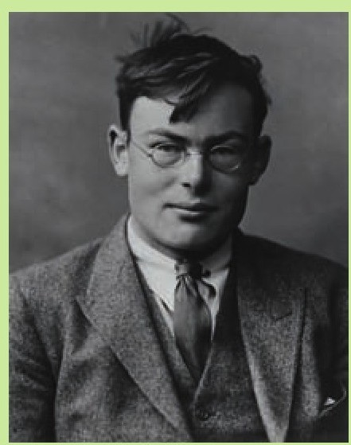
弗兰克·普伦普顿·拉姆齐是一位英国数学家。除了在数学方面做出成就之外，他还在哲学与经济学等领域做出了重要的贡献。他在26岁的时候就去世了。
他提出的理论认为，任何结构都必然包含一个有序的次结构。拉姆齐的理论旨在解答一个结构要处于怎样复杂的程度，才能够确保其拥有一定数量的次结构。
天文学家们已经验证了拉姆齐理论的合理性。他们从宇宙中发现了许多这样的结构模式。已知一定数量的星星，自然就会形成一种结构模式，如一个完美的长方形，又如北斗七星或其他结构模式。失序的情况其实只是量级的问题而已。
拉姆齐理论的一个经典例子就是著名的“派对谜题”。拉姆齐想知道，要确保某集合中一些对象共享某些属性，最少需要多少个这样的对象。比方说，至少包括两个同性别的最少人数是3。如果一共只有两个人，那么其中就可能会有一个男的，一个女的。不管第三个人是男是女，若将此人加进去，那么至少存在着两个同性别的人。
或者我们可以提出这样的问题：可以只用两种颜色对一个完全图的每条边着色，使形成的三角形每条边的颜色都不一样吗？拉姆齐就这个问题证明了一个一般性的定理。但有4个、5个或6个节点的例子，其实简单到用铅笔与纸张就可以证明了。派对谜题就是基于拉姆齐的理论提出的。
为了更好地感受优雅的图形在解答这类问题时呈现出来的美感，你可以想象一下，将六个人中所有相识的人可能的组合列举出来，一共可以列举出37768种组合，然后逐一检查每一个组合是否包括你想要得到的关系组合。
一个更高级的拉姆齐问题则需要我们想象一下：假设在一个派对上，四个人分在一组，他们彼此都是朋友，或者说他们相互之间都不认识；换句话说，他们要么彼此喜欢，要么彼此厌恶，那么这个派对至少需要多少人呢？拉姆齐证明需要18个人。如果你画出一个有18个节点的完全图，无论你怎么用两种颜色去对线段进行着色，你最终不可避免地会用其中一种颜色去连接四个点（也就是四个人），从而形成一个四边形。
要是让五个相互认识的人或五个相互不认识的人组成一组，派对至少需要多少人？这个问题至今仍没有答案。这个问题的答案大约在43到49之间。拉姆齐定理所具有的美感就在于其展现出来的简朴，事实上，它是可以通过直觉理解的。
——弗兰克·拉姆齐与保罗·埃尔德什
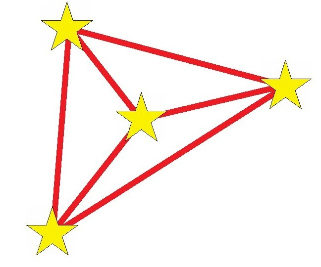
幸福结局问题
在仰望天空的繁星时，你需要选择多少颗星星，才能确保你在使用直线连接的时候，能够形成一个凸四边形呢？如图所示，选择四颗星星是做不到的。
在某个方向的平面上，至少需要多少个点n，才能够始终确保形成一个n边的凸多边形呢？
E.克莱因与G.塞凯赖什证明了与凸四边形相关的定理。他们俩共同进行研究，并在之后结为伉俪。因此，埃尔德什把这个问题命名为“幸福结局”（happy ending）。
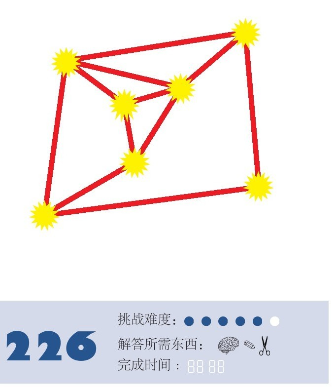
拉姆齐的游戏
15条白线在六个点上形成了一个完整的六角图。在我们的这个游戏里，15条线要么涂红色，要么涂蓝色。
两位选手轮流使用红色与蓝色对每条线进行着色。第一名选手必须用一种颜色创造一个三角形，将图形上的三个点连在一起，否则算输。在这个游戏里，必然会出现一位赢家。如图所示，一共能够对多少个不同的三角形进行着色呢？在一名选手获胜之前，需要对多少条线进行着色呢？这种游戏一共能够玩多少步呢？
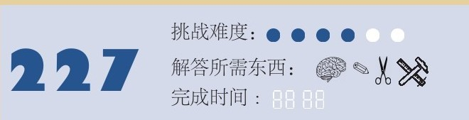
六人派对谜题——1930年
当你邀请五位朋友去参加一个派对时，你能避免让三人组成的一组全部喜欢或全部讨厌对方的情况出现吗？
我们可以将六个人（你与你的五位朋友）简化为六个点，创造一个有六个点的完整图形，从而简化这个问题。在这样的图形里，我们可以清楚地将所有可能的三人一组的组合区分开来，形成相互连接的三角形，其中就包括点与点连结而成的有相互联系的一对。如果我们作出一个图形，其中相互喜欢用红线表示，相互讨厌的一组用蓝线表示，那么我们就能按照保罗·埃尔德什提出的美妙方法去解答这个问题。
你可以用红蓝两种颜色对图形中的线段进行着色。如果你能够选择你的颜色，避免作出由三个连接的点形成的单色三角形，这样你就避免了让三个彼此喜欢或彼此讨厌的人组成一组。你能对这六个人进行组合，从而获得你想要的结果吗？
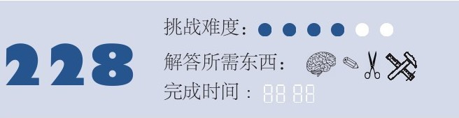
爱恨交织的关系
你可以避免在四人或五人小组中，有三人彼此喜欢或彼此讨厌。你可以用两种颜色中的一种对图形的每条线进行着色，避免作出一个三个点都用同一种颜色相连的三角形，如图所示。
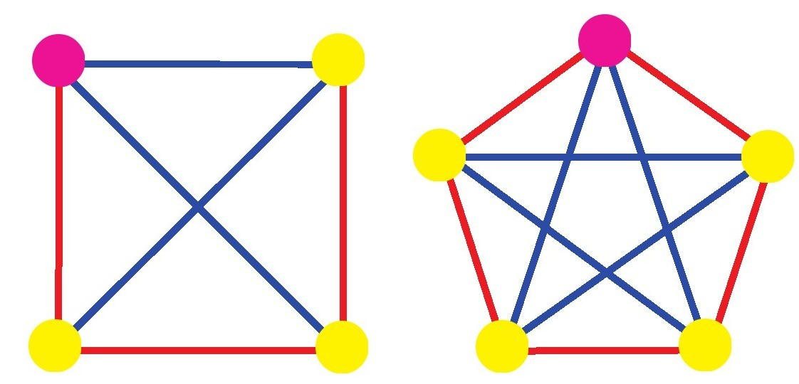
拉姆齐理论
拉姆齐理论其实是对派对问题的一个总结。
拉姆齐数字R（n, m）是保证出现N个红色节点或M个蓝色节点的最小的节点总数。注意，派对问题表明R（3，3）=6。
现在，我们已经知道了：
R（3，4）=9（在我们提到的游戏里）
R（5，3）=14
R（7，3）=23
R（4，4）=18
R（5，4）=25
R（6，3）=18
R（5，5）=43或是49
聚会问题（一）
用蓝色或红色这两种颜色逐一对图形上的线着色。分别连接三个或四个外在的数字点，在不得不画出一个红色三角形或蓝色四边形之前，你能对多少条线着色呢？换言之，你能对所有的线段着色，避免画出一个红色三角形或蓝色四边形吗？
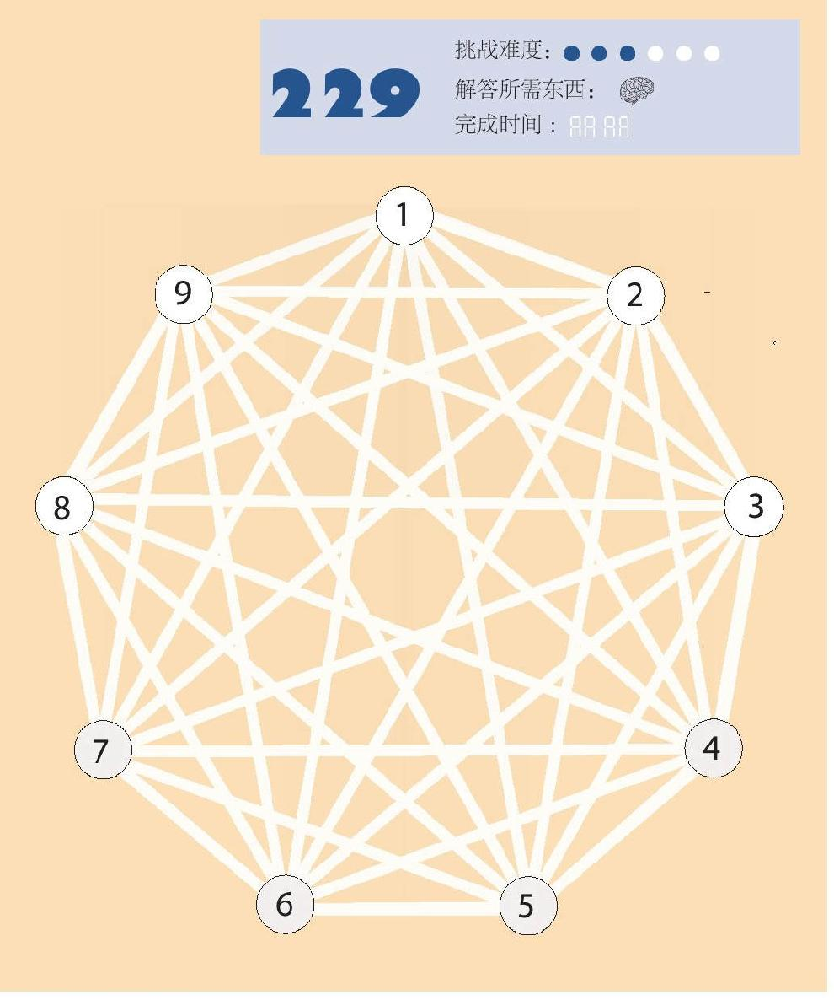
聚会问题（二）
在这个示例游戏里，三条线是没有着色的。用两种颜色中任何一种对它们着色，最终都会不可避免地画出一个红色三角形或一个蓝色的四边形。
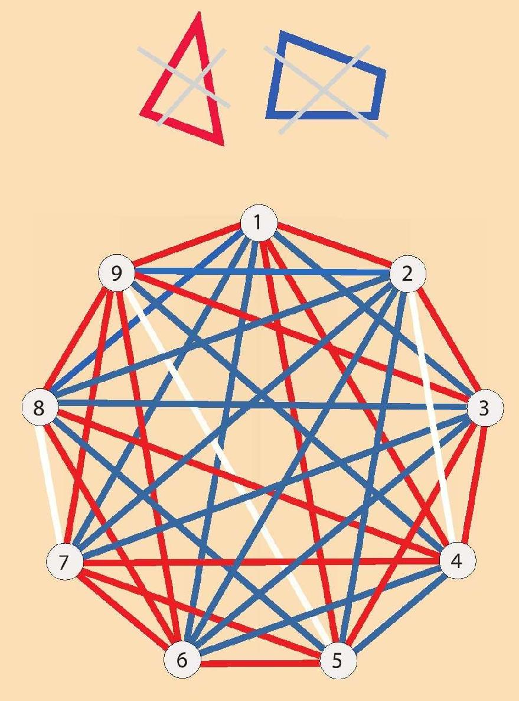
公共设施问题——1930年
三座房子都需要三样设施：电话、电力与自来水。因此，每一座房子都需要三个连接点。你能在连接点上画出连接线，将每一个公共设施与每座房子连接，使这些线不会相交吗？
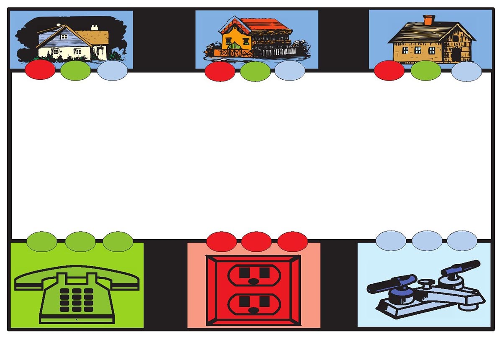
回家路线
在一片住宅区里住着三户人家，他们想用栅栏创造出三条不同的路线，使他们在出门或回家的时候都能够从他们自家的大门穿过（各家大门的颜色与他们房子的颜色一致），要求他们的路线不能相互交叉。右图所示的路线并不能解决这个问题，因为他们的路线在一个红点上相交了。
你能帮他们想出更好的路线，使他们在出门或回家的时候都能够走在自家的道路上吗？
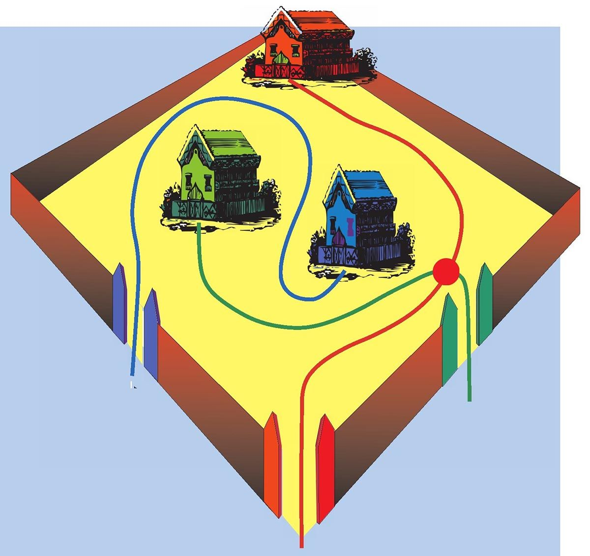
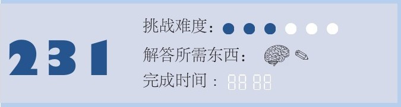
多部图——1930年
在每个游戏里，将不同颜色的动物连接起来，但是不能将那些相同类型或组别的动物连接起来。比方说，在第一个游戏里，红色的鱼不能与红色的贝壳或其他的鱼类连接在一起，当然绿色的鱼也不能与绿色的贝壳连接在一起，黄色的鱼也不能与黄色的贝壳连接在一起。
允许用曲线连接，你能够在不出现交叉的情况下画出多少条相互连接的线段呢？
这组游戏不仅是基于二部图的两组间点的连接游戏（如之前提到的那个公共设施问题），更多是基于由三组点构成的多部图（K3）或三部图。
多部图游戏（一）
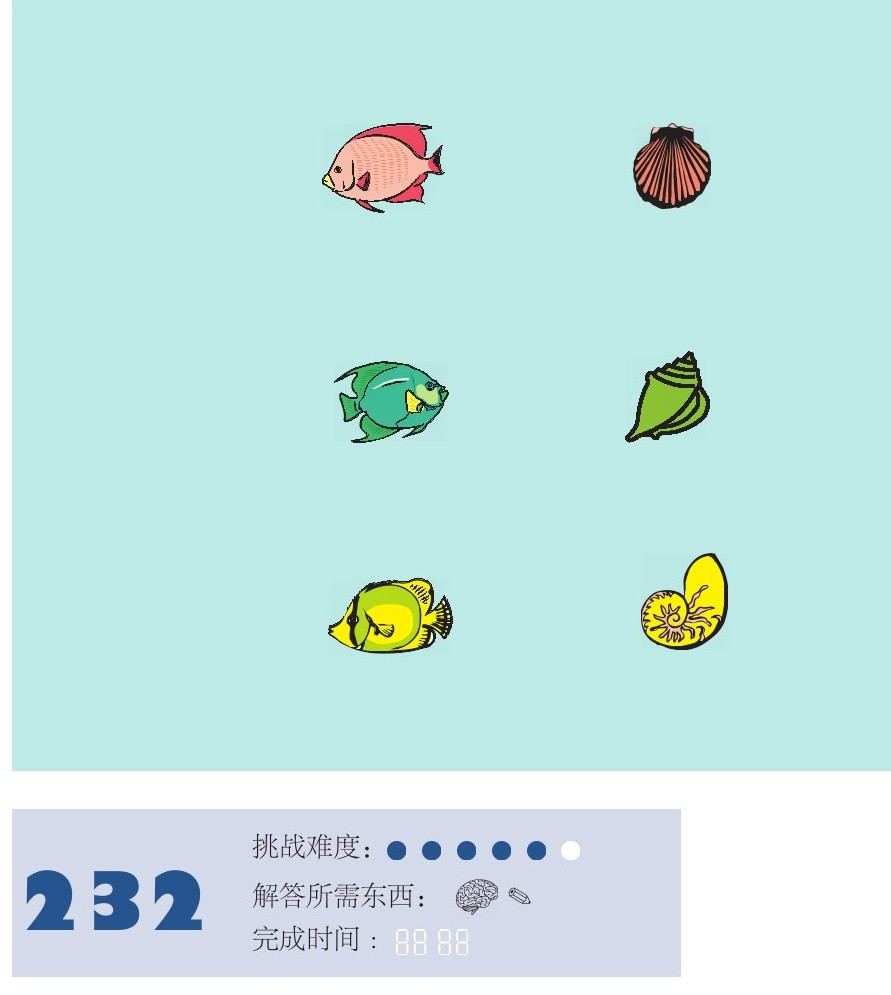
多部图游戏（二）
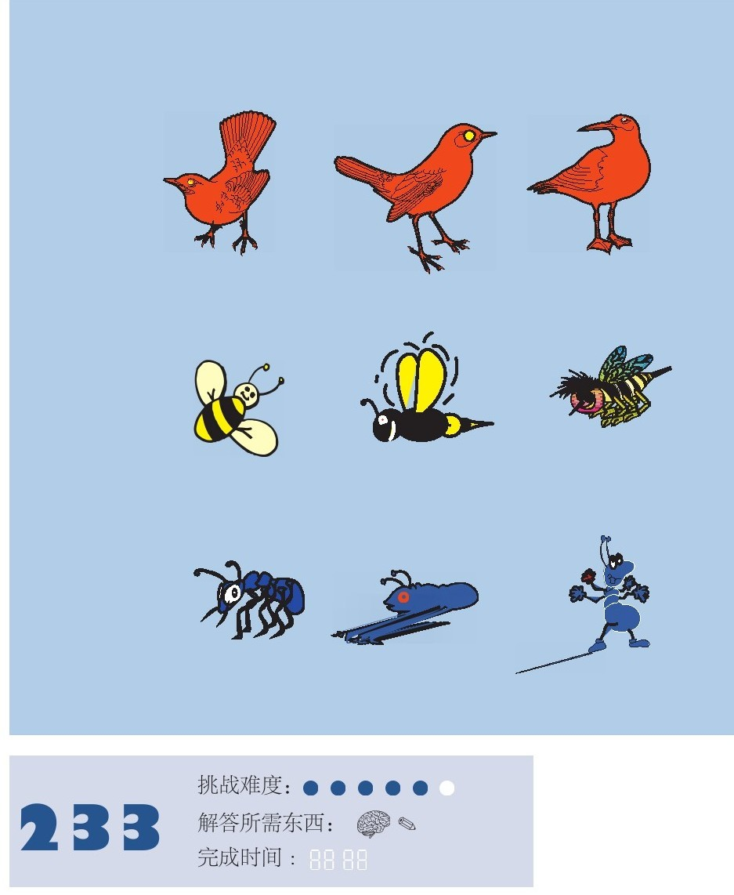
多部图游戏（三）
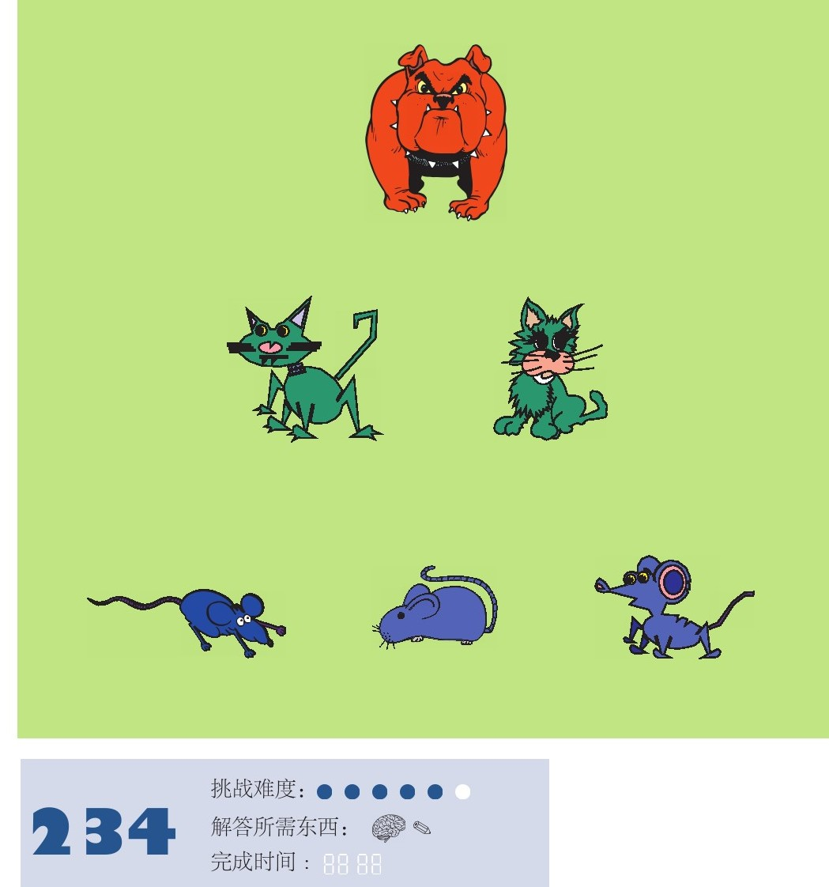
皮亚特·海恩的超椭圆——1931年
你可能知道，绘制一个单位圆的公式是x2+y2=1。你可以将这个公式变成适用于椭圆的公式，只需要通过添加另外两个常量a与b即可。那么这个公式就变成了（x/a）2+（y/b）2=1。
法国数学家加布里埃尔·拉梅（Gabrie Lame，1795—1879）想知道，如果我们将数值2变成数值n，那么（x/a）n+（y/b）n=1这个等式会出现什么变化呢？
如果n=0，我们就能得到两条正交的直线。如果n＜1，那么我们就能得到一个由四点组成的星。如果n=1，我们就能得到一个钻石形状的图形，如果n=2，我们就又重新得到一个椭圆。
如果n＞2，那么这个椭圆就变得越来越像长方形。以n=2.5为例，皮亚特·海恩将得到的图形称为“超椭圆”，并将它应用在很多方面。比方说，他利用超椭圆去重新设计斯德哥尔摩塞尔格尔广场的交通路线，避免出现长方形这种较为古板的形状，也避免了圆环式道路占据太多空间。椭圆会在角落的位置浪费许多空间，容易造成交通隐患。长方形则会减缓交通的流速。他的超椭圆就能解决这个问题。因为超椭圆既不是圆形，又不是长方形，因此刚刚好。
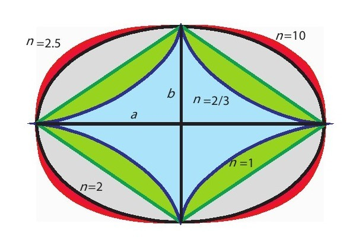
皮亚特·海恩（1905—1996）
皮亚特·海恩是一位很有才干的人：他是科学家、数学家，又是发明家、设计师，还是作家与诗人。他的短诗《格鲁克斯》是在纳粹德国占领丹麦结束之后发表的。在第二次世界大战期间，他一直是一位地下战斗者。除了创作诗歌外，他还发明了诸如Hex、Tangloids、Morra、Tower、Polytaire、Tatic、Nimbi、Qrazy Qube、Pyramystery与索玛魔方等游戏。他在城市规划、家具设计以及其他方面都运用了超椭圆的概念。
我曾与皮亚特有过多次会面。我非常尊敬他。能与他成为朋友是一件多么荣幸的事情。在我心目中，他是一位与列奥纳多·达·芬奇一样的天才。
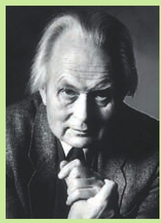
超级鸡蛋
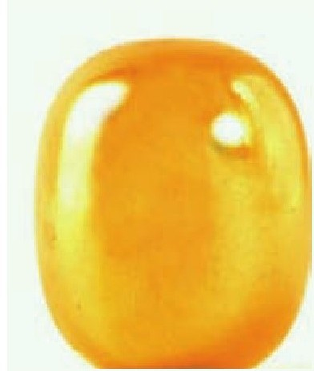
当一个超椭圆沿着它的长轴旋转，那么我们就能得到一个旋转曲面——一个超级蛋——这是一个非常有趣的三维立方体，两端都能在平面上保持平衡。
索玛魔方
皮亚特发明索玛魔方时只有26岁。该魔方是由七个可以拼在一起的图形组装而成的一个立方体或巨量的结构。索玛魔方所呈现出来的概念并不单纯是一种游戏。这是具有拓扑学美感的一种复杂的表现形式。皮亚特对他发明的索玛魔方是这样评价的：“七个简单的不规则立方体的组合能够再次组成一个立方体，这实在是自然界里一件充满美感的事情。许多从统一中衍生出来的事物最终都会回归到统一当中。这就是世界最小的哲学系统。”
马丁·加德纳与约翰·霍尔顿·康威对索玛魔方进行了详细的分析。康威发现，索玛魔方这种游戏有240种不同的解答方法，前提是将旋转与镜像的情况排除在外。
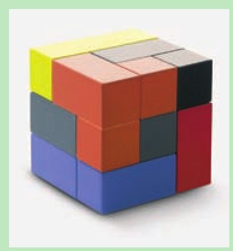
保罗·埃尔德什（Paul Erdos，1913—1996）
保罗·埃尔德什是来自匈牙利的著名数学家，他研究的领域包括组合学、图论、数论、经典分析、近似值以及概率论。他是数学最伟大的推广者之一，被同时代的数学家视为他所在领域内最具才华的数学家。他对世俗的成功以及个人的舒适漠不关心。他身无长物，只有两个手提箱。他将许多奖项的奖金都捐助给了其他更窘困的数学家。“财产是个麻烦。”他说。
也许是因为他古怪的性格，很多数学家都很尊敬他，觉得与他一起工作让人感到无比兴奋。很多数学家将他视为数学界的天才，在其他数学家耗尽心力通过几页的计算去找寻一个等式时，他总能找到一个聪明且简洁的解答。
他与很多数学家进行过合作，最终诞生了埃尔德什数。要获得埃尔德什数1，一个数学家必须与埃尔德什合作发表论文。为了得到埃尔德什数2，他或她必须与某个曾与埃尔德什合作过的数学家进行合作，依此类推。得到过埃尔德什数2的数学家，总人数多达4500名。
保罗的幽默感与特质可以从下面的词语中得到体现：
——他称孩子为“爱普西隆”（即希腊语第5个字母∊。因为在数学领域，特别是在计算方面，一个任意小的正量都可以用希腊字母去指代）。
——称女人为“老板”。
——称男人为“奴隶”。
——称那些不再从事数学研究的人为“死人”。
——称那些生理上已经死亡的人为“被遗弃的”。
——称酒精为“毒药”。
——称音乐为“噪音”。
——称那些已经结婚的人为“俘虏”。
——称那些离了婚的人为“自由人”。
——称上数学课为“布道”。
——称给学生布置口头作业为“折磨”他/她。
埃尔德什与上帝之间存在着非常私人的关系。他经常会谈到《圣经》与他充满想象力的发明，认为它们都是上帝让这些数学定理与思想以最具美感与优雅的姿态呈现出来的证据。
1985年，他说：“你并不一定要相信上帝的存在，但是你必须相信《圣经》。”
关于他的墓志铭，他是这样建议的：“我终于停止变笨了。”
1996年，埃尔德什在华沙参加一次会议时，因心脏病突发而去世，当时他还在计算一个方程式。
埃尔德什-切比雪夫定理
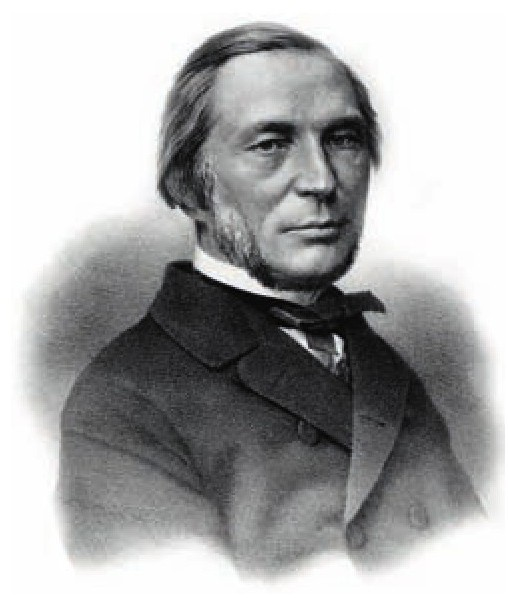
每一个大于1的数，在这个数以及这个数翻倍后的数之间，必然存在着一个质数。比方说，质数3就是2与4之间的一个质数。
这就是所谓的埃尔德什-切比雪夫定理，这是以埃尔德什与俄罗斯数学家帕夫努季·切比雪夫（1821—1894）两人的名字命名的，因为切比雪夫在19世纪就证明了这个定理，之后，保罗·埃尔德什同样证明了这个定理，但他的证明过程更加简捷。
埃尔德什加一减一的序列
将n个+1与-1排成一排。比方说，当n=2与3时：+1+1-1-1与+1+1+1-1-1-1等。你能用多少种不同的方式去写下这两个序列呢？
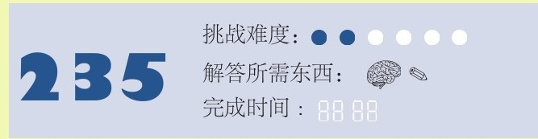
不可能图形
不可能图形又称不可能的物体，它是某种二维图形造成的一种幻觉，让我们的大脑潜意识误认为是某种三维物体投射的影像。虽然在几何层面上，这样的物体是不可能存在的。
瑞典艺术家奥斯卡・雷乌特斯瓦德（1915—2002）最早有意识地设计出了许多不可能的物体。他被称为“不可能图形之父”。他创造了超过2500个不可能图形，所有这些图形都是以等距投影的方式完成的。他的作品已经被翻译成多种语言。
通常情况下，我们长时间地盯着这种图像，不可能性就会呈现出来，虽然它一开始给人的感觉是一个三维的物体。还有些不可能的物体，其不可能性并不会明显地呈现出来。因此，我们有必要先分析这种形状所具有的几何属性，然后才能判断它是不可能的。如果不可能物体造成的幻觉不是最大的幻觉，那什么才是呢？
可能还是不可能
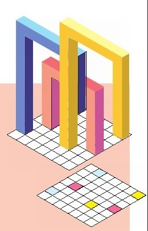
这三道门表现出了简单平面和多重平面，而多重平面则是很多不可能图形的基础。从一个点观察的话，多重平面看起来就像是一个平面。可是从另一个点去看的话，可能就会看到两个或多个平面。若是从这个平面的底部去看，我们很容易就会发现哪一道门是不可能存在的。
——保罗·埃尔德什的墓志铭
不可能三角形——1934年
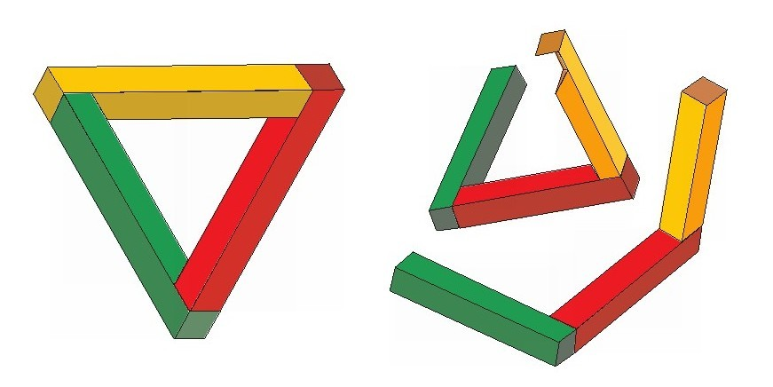
彭罗斯三角形，又称彭罗斯三杆，是由奥斯卡·雷乌特斯瓦德于1934年最早创建出来的。这是不可能图形的一个最好范例。
罗杰·彭罗斯于20世纪50年代独立地设计出了这种三角形，并将之推广开来。他将之称为“以绝对纯粹的形态展现出来的不可能”。这种不可能性在艺术家M.C.埃舍尔的作品里得到了鲜明的呈现。埃舍尔用一些不可能的物体建造出了一个可居住的世界，而雷乌特斯瓦德的设计一般都是由纯粹意义上的几何图形构成的。
长久以来，数学家们一直认为，著名的不可能三角形是不存在的。然而，上面的那张图片就是理查德·格雷戈里创造出来的。之后，约翰·贝勒斯通（John Beetlestone），这位英国布里斯托实验科学中心的技术总监，也将它重新创造了出来。他创造的不可能三角形非常庞大，大到足以让游客在科技馆的大门口穿过它。
但是，格雷戈里教授真的创造出了一个不可能的三角形吗？当你认真观察上面的图形，就会发现事实不是这样的。他只是建造了一个简单的结构，从某个特殊的位置观察的话，你才会发现它与不可能三角形非常相似。从这个方向去看，当两端完全重叠时，大脑的感知系统就会认为它们是置身于同一个平面的。这样错误的印象从一开始就创造出了一个相悖的感知。
洛塔尔·科拉茨（Lothar Collatz，1910—1990）
洛塔尔·科拉茨教授是一位德国数学家，他在数字分析的所有领域都做出了基础性贡献。科拉茨教授所展现出来的数学创造力与原创力是每个了解他的人都能明显感受到的。
G.迈纳尔杜斯与G.尼恩贝格尔在《纪念洛塔尔·科拉茨》一书中写道：“他深信数学与数学家都有责任将他们的结果运用到现实生活中去。他从不曾动摇自己的这个信念。”
科拉茨问题与冰雹数——1937年
今天，很多人之所以知道科拉茨这个名字，都是因为“科拉茨问题”。这个问题是科拉茨在1937年提出来的，被称为“科拉茨猜想”。该问题中的数列被称为冰雹数列或冰雹数，或称为神奇数字。他提出的这个问题一直让许多数学家为之着迷。
科拉茨问题可以非常简单地表述为：假设有一个正整数x，如果这个数是偶数的话，那么就让这个数除以2，也就是x/2。
如果这个数字是奇数的话，那么就将这个数乘以3，然后再加上1。利用最后得到的整数，重新开始一遍这个运算过程，直到得到数字1，就会出现“4，2，1，……”这样一个永无止尽的循环。科拉茨惊讶地发现，这样的情况总是会出现，但他却无法加以证明，也找不到一个最终不会以数字1结束的例子。
科拉茨猜想提出了这样的问题，那就是对于所有正整数，是否最终都会以数字1结束。右图给出了前面14个正整数，表明前面14个冰雹数最后是以相对简短的序列结束的。正如我们所看到的，在无穷尽的4-2-1循环出现之前，每种情形下的数列迟早都会以数1结束。但是，如果你以数15去试的话，将会出现什么情形呢？
科拉茨问题所提出的数列同样被称为冰雹数，因为它们的数值的升降，就像是从云层里落下来的冰雹一样。
康威证明，这个问题很难给出一个明确的回答，因为得到的结果既不是完全可以证明的，也不是完全不可以证明的。埃尔德什注意到，现在的数学研究还不能解答这个问题。
当代的超级电脑检验了从1到27万兆亿的所有数字，谁也没有发现冰雹数最后不是以数字1结束的。到目前为止，数位最长的冰雹数是一个15位的数，它的冰雹数包含182 0个数。
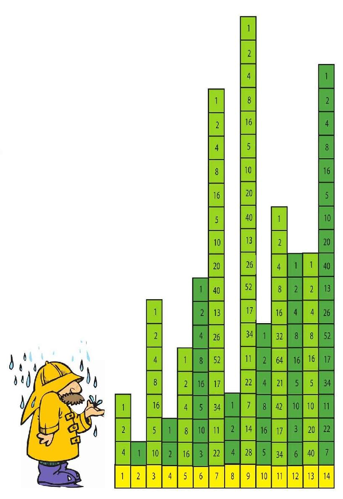
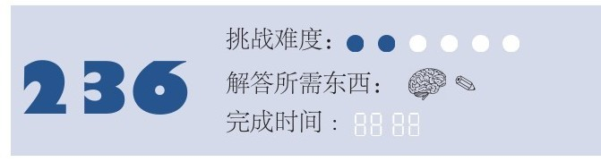
完美正方形——1938年
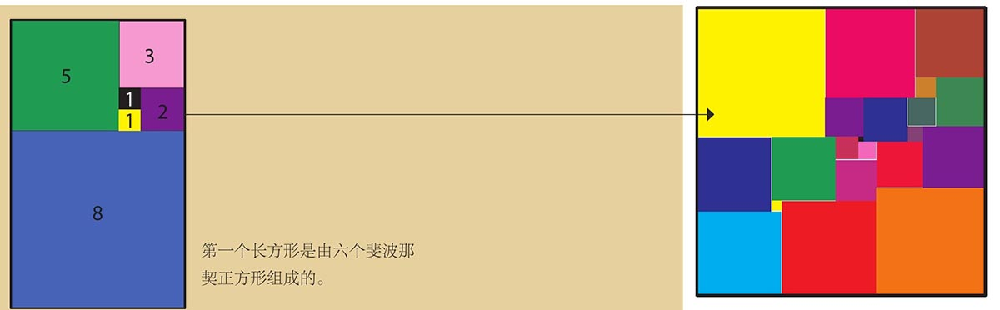
数学家无时无刻不在找寻秩序。当他们似乎发现一种模式时，就会用完美、不完美等词来对数字、正方形、长方形、三角形或平行四边形进行定义，以表达他们的激动。
化圆为方这个问题可以追溯到古希腊时期，但是，化方为方这个问题，则是近代才出现的。1934年，著名的匈牙利数学家保罗·埃尔德什提出了下面这个剖分问题：一个正方形是否能够剖分为较小的正方形，并使任意两个正方形的面积都不相等？这样的正方形就被称为“完美”正方形或“化方为方”的正方形。
埃尔德什得出了一个错误的结论，即这样的正方形是不可能存在的。这也许是因为他受到之前所证明的事实的影响（任何人都无法将一个立方体剖分成多个较小的立方体，使得任意两个立方体都不相同）。由此，他得出了一个结论，认为数学家所能得到的最好结果，就是将一个长方形剖分为多个较小的正方形，使得任意两个正方形的面积都不相等。
在过去很长一段时间里，人们一直不知道是否有一个可化方为方的完美正方形存在。但在1938年，R.斯普拉格发现了一个55平方的完美正方形。1948年，一个24平方的完美正方形则被威尔科克斯发现。多年来，数学家们一直以为，这个需要24个正方形（每个正方形的面积都是不同的）的正方形是最小的完美正方形。但在1978年，荷兰数学家A.J.W.杜伊威斯丁找到了一个更好的解决办法，他只需要21个基本正方形就能够做到。从目前来看，这是我们所知道的用剖分法能求出的最小完美正方形了，而这个正方形的模式也是独一无二的。如果允许剖分出的正方形大小相等的话，那么这些正方形或长方形就被认为“不完美”或被称为“珀金斯夫人的棉被”。
最小的完美正方形
通过用完美正方形去替换斐波那契长方形里的第一个斐波那契正方形，我们还能够解决用不相等的正方形去镶嵌无限平面这个古老问题。
将一个正方形剖分成多个正方形，这是没有问题的，但是附加的条件则让这个问题变成了一个具有美感却又非常困难的问题，这在很长一段时间内困扰着数学家。因为这个附加条件要求所有正方形的面积都是不相等的。最小的完美正方形，是杜伊威斯丁发现的，它包括21个面积不相等的正方形，这些正方形的面积分别是：2-4-6-7-8-9-11-15-16-17-18-19-24-25-27-29-33-35-37-42-50。
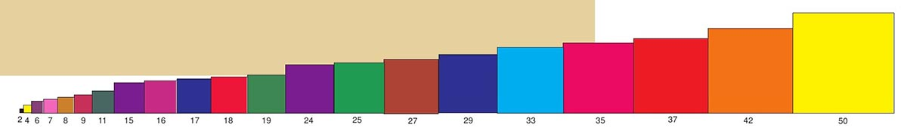
投掷作弊——1938年
让你的朋友手握一枚硬币，抛掷200次，然后记录下结果，或是假装抛掷硬币，然后编造200次的结果。之后，告诉他们你在几秒钟内就能知道他们的结果是真实的还是编造的。如果你不知道一件事发生的真实概率，那么你就编造不出一个让人信服的结果，也编造不出概率法则运算的让人信服的证据，这个例子就能清晰地说明这点。
下面就是这些实验的结果，你能说出哪一个结果是编造出来的吗？
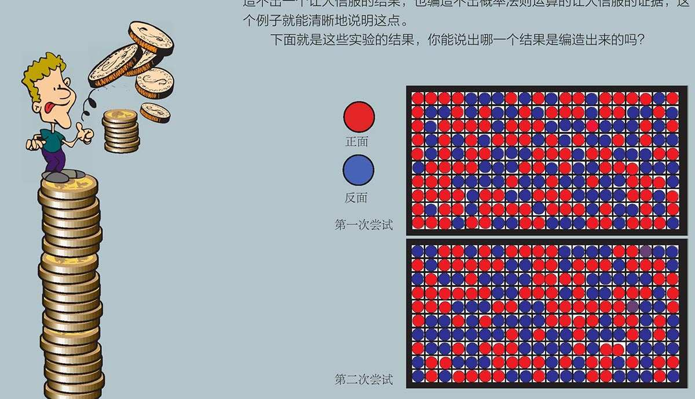
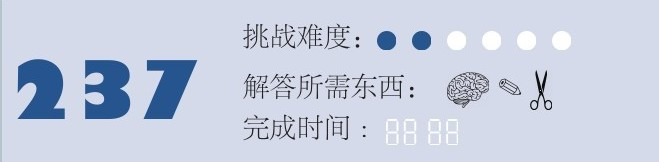
本福特定律
1998年8月4日，《纽约时报》报道了西奥多·P.希尔博士给乔治理工学院数学专业的学生布置的一道家庭作业：回家之后，要么投掷200次硬币，并将投掷的结果记录下来；要么假装投掷了硬币，然后编造200个不同的结果。第二天，他查看学生们的家庭作业。让学生们感到惊讶的是，他可以很轻易地发现哪些投掷结果是编造出来的。他在一次访谈时这样说：“事实上，绝大多数人都不知道这种做法的真实概率，因此他们编造不出让人信服的结果。”这并不单纯是一次有趣的家庭作业。
希尔博士是一名统计学家、会计师与数学家，他相信本福特定律，认为这一定律是一种强大而又相对简单的工具，能够指出欺骗、贪污、逃税、账目作假或电脑故障等方面的问题。
本福特定律是以已故物理学家、曾任职于通用电气公司的弗兰克·本福特博士的名字命名的。1938年，本福特博士注意到对数表前面几页被翻得很脏，而后面却不是这样。虽然本福德定律适用于不同种类的数据集，但对这一现象的解释绝对没有那么简单。
折纸人像——1939年
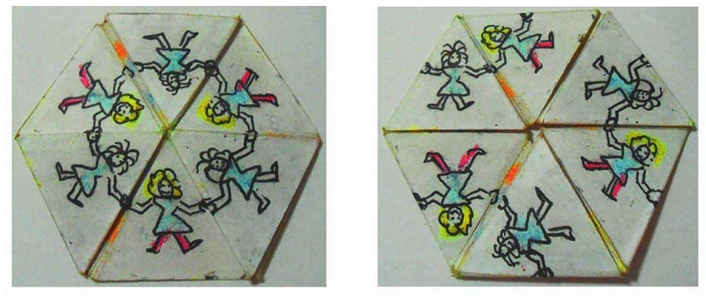
折纸人像是平面上的一种拓扑学结构，通常通过折叠或某种方式去展现原先在背后与前面的两个面。折纸人像通常是正方形、长方形（四边折纸），或六边形（六边折纸）。
1939年，阿瑟·哈罗斯·斯通发现了第一个折纸人像，这是一种三角六边形折纸人像。据说，他在玩纸的时候，剪下大号书写纸，使之变成信封大小的尺寸，误打误撞发现了这种折纸方式。斯通的同学布赖恩特·塔克曼、理查德·P.范曼与约翰·W.图基都对这个想法非常感兴趣，于是组成了普林斯顿折纸人像协会。塔克曼找到了一种被称为“塔克曼遍历”的拓扑学方法，使折纸人像的每个面都可以展现出来。折纸人像很快就在大学校园里流行起来了。
1959年，在《科学美国人》杂志里，马丁·加德纳首次介绍了折纸人像，折纸人像很快就风靡全世界。
折纸人像本质上是一种数学的好奇心，虽然其概念已应用到商业产品当中，比如应用到杯垫、问候卡片或玩具等产品的设计上。从20世纪60年代开始，我就一直对折纸人像与纸张折叠非常感兴趣，发明了多种与折纸相关的原创游戏与玩具。
阿瑟·哈罗德·斯通（Arthur Harold Stone，1916—2000）
阿瑟·哈罗德·斯通是他那个时代最具前瞻性的拓扑学家，在一般拓扑学的不同领域里做出了诸多贡献。他的父母是从罗马尼亚移民到美国的犹太人。从1948年开始，他就一直是伦敦数学协会的会员。
1935年，他在剑桥大学的三一学院获得了一项专业奖学金。他不仅在学业上极为出色，还是一位优秀的小提琴家及强大的棋手。他在1938年获得学士学位之后就前往美国的普林斯顿大学深造，在莱夫谢茨的指导下获得了博士学位。
虽然他是一位非常专注的数学家，但他的兴趣爱好非常广泛，这样的组合通常会以人们意想不到的方式展现出来，比如他发现了著名的折纸人像。他双手灵巧，又具有创造力。他发挥自己的才华，制造出了一座逆时针转动的落地式大摆钟。
另一个令他感兴趣的问题就是，如何将一个正方形剖分为多个较小的互不相等的正方形（参见完美正方形的内容）。他的纪录是69个正方形，之后这个数字被其他人打破了。
18点布置的问题
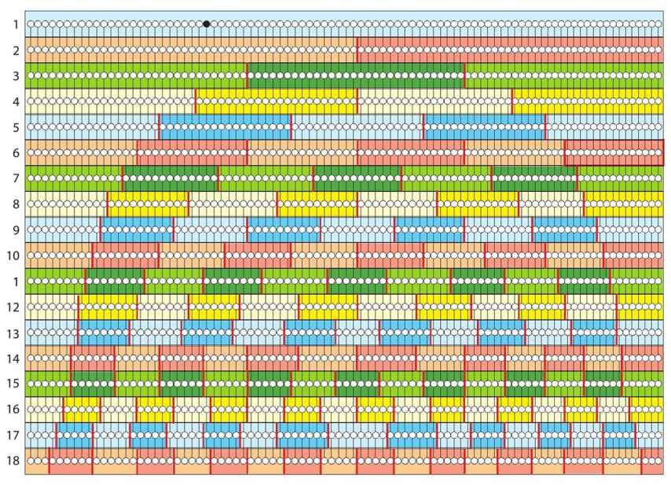
想象你有一片土地，土地上有一棵树，这棵树用一个可以放置在任何地方的点（第一排）来表示。将这块土地分为两个部分，你在第二个空白部分里（第二排）种下第二棵树。
接着，你决定将你的土地分为三个面积相等的部分，并且再种植一棵树（在空白的第三块），接着继续这样的做法。之前种植的树刚好都是在不同的地块上。
你是否具有足够长远的眼光，当地块越分越多时，仍保证每棵树都种在独立的地块上？在两棵树置身于同一个地块之前，你能放置多少个点呢？到此，游戏结束。
在本书最后的答案部分，你将会得到一个到第六代才结束的答案。记住，世代的序列代表着相同长度的土地被分割为越来越多的等份。在解答这个问题时，可以试试两人对战。选手们可以轮流放置这些树木。最终失败的一方，就是那些不得不在之前已经种植过树的地方再种植树的选手。
18点的问题
18点放置的游戏是著名的18点问题的一个简化版本。在一条有着无数个点的线上，按照相同的方式对这条线进行分割，目的就是让18个点同处于这条线上。

你们可能会认为，可以将无数个点放在一条线上，但是这样的想法是错误的。无论以怎样的方式放置这些点，人们都无法将17个以上的点放在一条线上，第18点终究会结束这个游戏。
这一具有美感的问题于1939年首次出现在波兰数学家雨果·斯坦豪斯（Hugo Steinhaus）的《基础数学的100个问题》一书里。之后，加德纳、康威、瓦尔穆斯、博尔勒坎普、巴克斯特与其他人都对此进行了广泛深入的研究。
关于17点的放置，一共有768种不同的方法。
生日悖论——1939年
你想要举办一个生日聚会，希望至少有两个人的生日是在同一天。他们的出生日期可能是在同一个月的同一天，但并不一定是在同一年。如果你不知道参加聚会的每个朋友的生日，你至少需要邀请多少名朋友，才能确保至少有两个人的生日在同一天的概率超过50%呢？你至少需要邀请多少人参加聚会，才能确保至少有两个人的生日在同一天？
有趣的是，至少有两个人的生日在同一天的概率要想超过50%，那么参加聚会的人数只需要23人。要解答这个问题，你必须要计算每个人的生日都是不同日期的概率。对只有两人组成的一组，这样的概率是极高的，大约是364/365。而三人一组的情况依然包含着两人一组的情况，那么这两个概率就需要相乘。
沿着这样的思路继续前进，直到小组内每个人拥有不同生日的概率降到低于0.5，这就意味着两个人是在同一月同一天生日的概率是超过50%的。
这一现象通常被称为“生日悖论”，因为对于大于或等于57人的情况，这个概率将接近99%，而不需要像我们的直觉告诉我们的那样，需要366人才能确保100%的概率。
得出这些结论的前提是：参加聚会的每个人在某一年任何一天出生的概率都是相等的（2月29日除外）。
理查德·冯·米泽斯（Richard von Mises，1883—1953）
理查德·冯·米泽斯是一位犹太科学家与数学家，出生于奥地利。他研究的领域包括固体力学、流体力学、空气动力学、航空学、统计学以及概率论。
冯·米泽斯出生于奥地利，1933年纳粹党掌权后，冯·米泽斯觉得自己的处境很危险，于是逃到了土耳其。1939年，他移居美国。1944年，他被任命为哈佛大学空气动力学与应用数学系的戈登-麦凯教授。
他第一个提出了我们今天称之为“生日悖论”的著名概率论问题。生日悖论其实是从一个群体里随机选择两个有着相同值的样本的问题，如参加聚会的人们的生日。这个悖论表明，两个人同一天生日的概率要比人们想象的高很多。
大理石混合，茶混奶
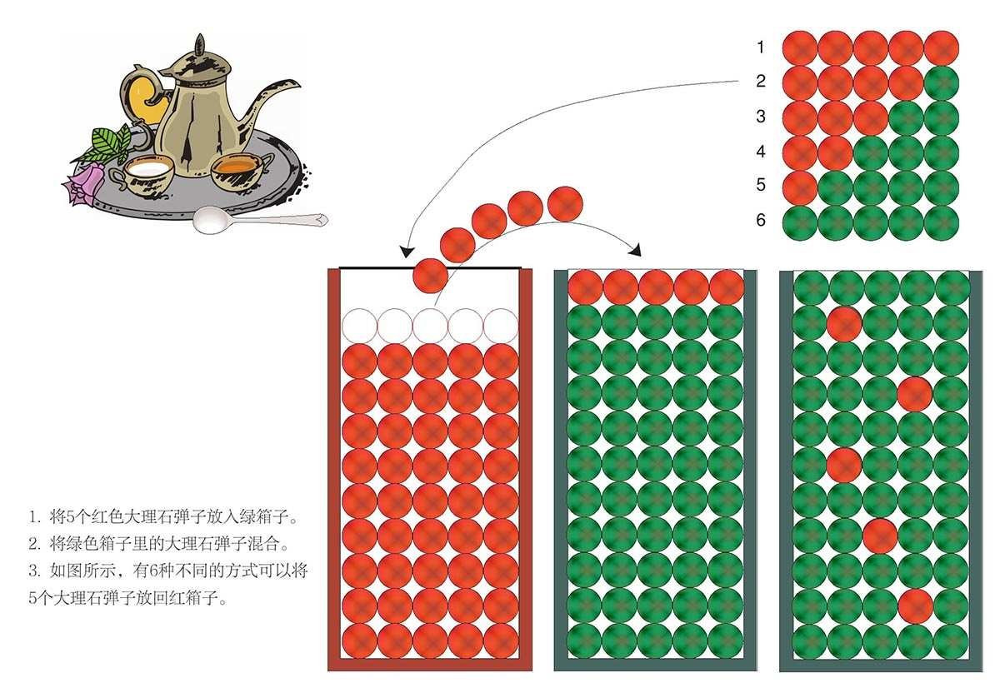
我遇到的一个最违反直觉的有趣谜题，就是茶混奶这个经典的问题：将一勺牛奶加入茶水中，然后从混了一勺牛奶的茶水中舀一勺出来加入之前的牛奶杯里。
问：茶水里的牛奶含量是否要比牛奶杯里的茶的含量更高，还是相反？
这个问题看上去非常棘手，而违反直觉的答案就是，茶水里的牛奶与牛奶里的茶水是一样多的。对这个问题的解释就是，每个杯子里的液体总量是不会因为转移的过程而发生改变的，而从A杯子转移到B杯子的净容量抵消了之前从B杯子转移到A杯子的净容量。
一开始，我对这个问题抱着怀疑的态度。多年之后，我进行了一个类似的大理石弹子实验，就是用两种颜色的大理石弹子代替茶水与牛奶，你不妨一试。
用大理石弹子将两个箱子填满，假设每个箱子里有50个大理石弹子，一个箱子里装着红色的大理石弹子，而另一个箱子则装着绿色的大理石弹子，如图所示。
从红色的箱子里取出5个大理石弹子，并将这些大理石弹子放到绿色的箱子里。将绿色箱子里的大理石弹子混好之后，随机地取5个大理石弹子放回红色箱子。哪一个箱子将会包含错误颜色的大理石弹子呢？
这个实验是可以用视觉化的方式呈现出来的。将大理石弹子放回红色箱子有6种不同的方式。在每一种情形下，都会有相同数量不同颜色的大理石弹子放入每个箱子里。无论对多少个大理石弹子进行转移，都会发生同样的情况。
六角游戏——1942年
六角游戏是最具美感的拓扑学游戏之一，这是皮亚特·海恩——著名的丹麦发明家与自由斗士——在1942年发明的。他在分析拓扑学的四色问题时发明了这个游戏。
1948年，约翰·F.纳什（John F.Nash），这位在麻省理工学院工作时获得诺贝尔奖的人，重新独立地发明了这个游戏。这个游戏最早引入了连接与交叉原则，后来的许多游戏，诸如Twixt、Bridge-It以及其他游戏都是在这个游戏基础上衍生出来的。这虽然是一个非常易学的简单游戏，却隐藏着令人惊讶的数学微妙性。
六角游戏是在11×11的六角形棋盘上进行的（如下一页所示），但是棋盘的大小会根据之后的衍生版本而出现不同的情况。一名选手使用红色的棋子，另一名选手则使用绿色的棋子。同样可以像纸笔游戏那样玩耍，使用不同颜色或简单的“O”“X”符号，或使用一组小硬币，以猜正面或反面的方式去玩。选手们需要轮流将棋子放置在尚未被占据的六角形空格里。这个游戏的目的就是从棋盘的一边到另一边形成一条纯色的完整链条。六角形的每个角都可能只涂有一种颜色或标有一种记号。记住，不可能出现平局，总会有人赢。
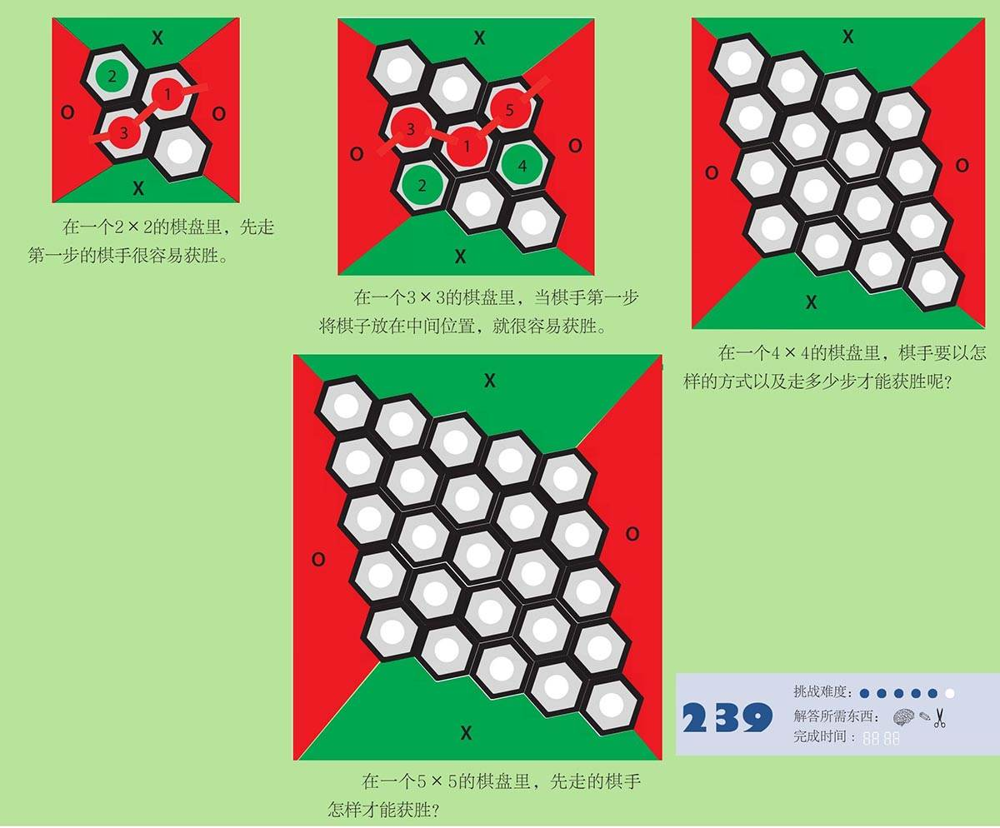
六角形
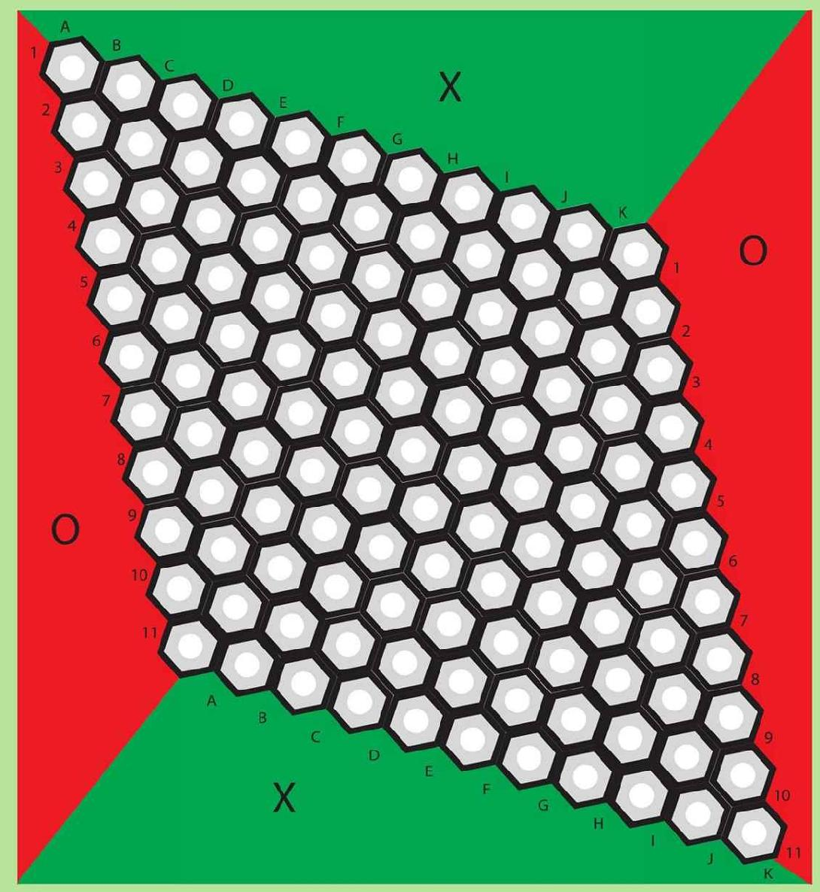
这是适合两个人博弈的标准棋盘，要是你手头有一些硬币，现在就可以开始这个游戏。
哈罗德·斯科特·麦克唐纳·考克斯特（1907—2003）
哈罗德·斯科特·麦克唐纳·考克斯特是一位出生在英国的加拿大几何学家。他生于伦敦，但一生绝大部分时间都是在加拿大度过的。考克斯特被认为是20世纪最伟大的几何学家之一。他通常被称为“几何学之王”。他对几何学的贡献是巨大的。
1936年，考克斯特得到了多伦多大学的一个职位。他在多伦多大学工作长达60年，出版了12本书。他最著名的研究就是在正多面体以及更高维几何学方面的研究。当时用代数学去研究几何学成为一种流行趋势，而他不盲从潮流，倡导以古典方式研究几何学。
正多边形与星形——1950年
我们已经知道，如果一个多边形有以下两个属性，那么就可以成为正多边形：
——每条边的长度都是相等的。
——每个角都是相等的。
一个圆形可以被视为一个拥有无数条边的正多边形。
也有无数的正多边形可以细分到下面几个次组合里：
——简单的正多边形（红色所示）
——正星形多边形
——复合正多边形
前七个正多边形里的星形正多边形（蓝色）与复合正多边形（绿色）如图所示。
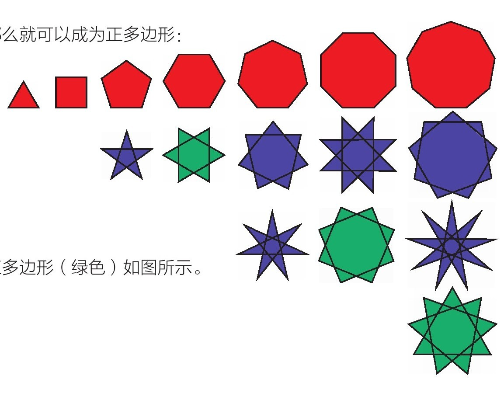
星形与复合形
正十边形、正十一边形、正十二边形拥有多少种星形与复合形？
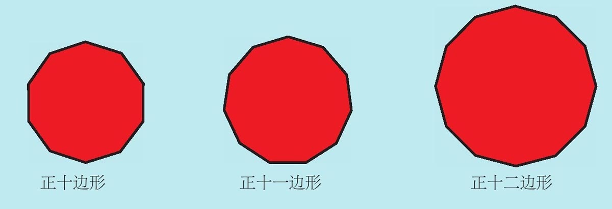
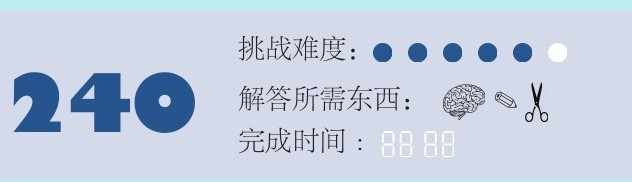
哥隆尺：完美与最优哥隆尺——1952年
哥隆尺是一种不同寻常的测量方法。它是W.C.巴布科克在1952年首先提出的。
今天，人们所称的哥隆尺是以所罗门·W.哥隆这位南加州大学数学教授与电力工程师的名字命名的。哥隆对这种测量方法进行了深入的分析，并且将之拓展到一个全新的意想不到的方向。
哥隆尺是这样建构的：任何两个刻度都无法测量相同的距离。哥隆尺上的刻度都是按照整数乘以固定空间距离得出来的。这样做是为了记录下刻度，从而尽可能用有限的刻度去测量多个距离。为了达到这个目的，必须以高效的方式标记刻度，以避免刻度间进行重复的测量。
在一把长度为n的完美哥隆尺上，所有的距离都是从1-2-3-……n为止，而且这些距离都只需要测量一次即可。完美哥隆尺只有四个长度的刻度。最优哥隆尺——换言之，刻度数量尽可能少的哥隆尺，需要满足这样的条件：任意两个刻度间都不可能测出相同的距离。但是，从零到尺子长度之间不可能总有连续的距离。
随着尺子的刻度越来越多，找到并且证明最优哥隆尺也变得越来越难。今天，最优哥隆尺有24个刻度。现在，不少数学家都在寻找有25个刻度或26个刻度的尺子。
哥隆尺问题是消遣数学领域内最具美感的问题之一，在多个科学与技术学科领域，这样的尺子也是需要的。它始终走在数学研究的前列，证明消遣数学与纯粹数学之间是有关联的。哥隆尺提供了一般间距原则，可以被应用到天文学（天线的放置）、X线感应装置（感应装置的放置）以及其他领域。
一把12个单位长度的尺子有13个刻度
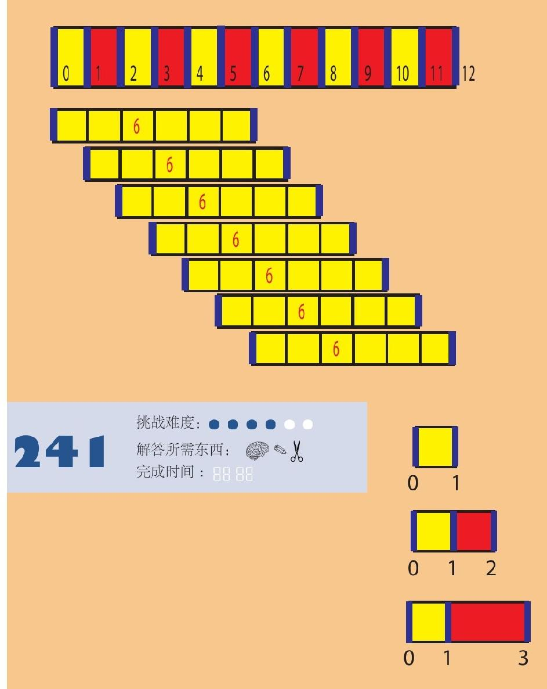
如图所示，一把12个单位长度的尺子有13个刻度，这能让我们测量正整数1到12个单位长度之间的任何距离。从数学的角度去看，这并不是一种非常经济的布局。利用13个刻度去测量从1到12个单位长度的做法并不是非常高效的。比方说，我们能够用12种不同的方式去测量单位长度，用7种不同的方式去测量6个单位长度（如图所示）。显然，这并不是一把哥隆尺。我们能够减去多余的部分，创造出一把有不同数量刻度的最优哥隆尺吗？
完美哥隆尺
一把1个单位长度的尺子有2个刻度，这是“完美”却毫无价值的。
一把2个单位长度的尺子有3个刻度，这是“不完美”的，因为它能够用两种方式去测量一个单位长度。
一把3个单位长度的尺子有3个刻度，它其实就是第一把“完美”的尺子。
单位长度为n的完美尺子可以被定义为这样一把尺子：它只能够以一种方式，对从1到n的所有整数距离进行测量。你能找到下一把完美哥隆尺吗？
最优哥隆尺
你能在尺子上放置6个刻度，从而创造出一把“最优”的哥隆尺，并用这把尺子的两个刻度测量最大数量的距离，且只测量一次吗？哪些距离是无法进行测量的呢？
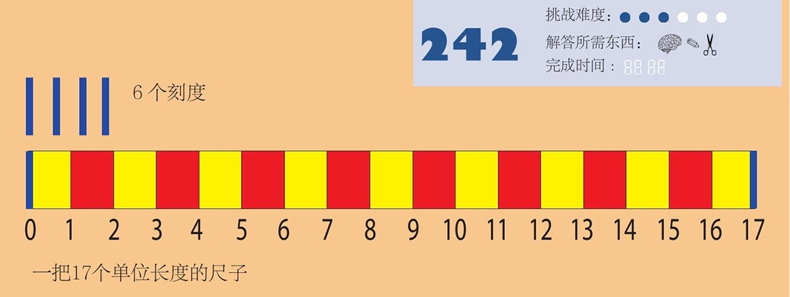
消失的方格
沿着对角线将一个棋盘切割成两个部分，如图所示。下半部分沿着对角线向左移动1个单位长度，剩下的三角形（蓝色）刚好能够填充左边底部的三角形空间，如图所示。
一个7×9的长方形是由一个面积为63个1平方单位的正方形组成的，这要比原先的棋盘少1个平方单位。你能解释其中的悖论吗？
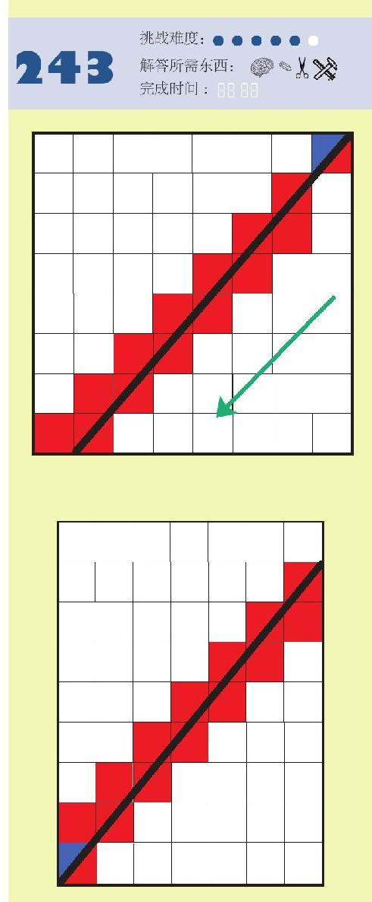
库里的棋盘悖论——1953年
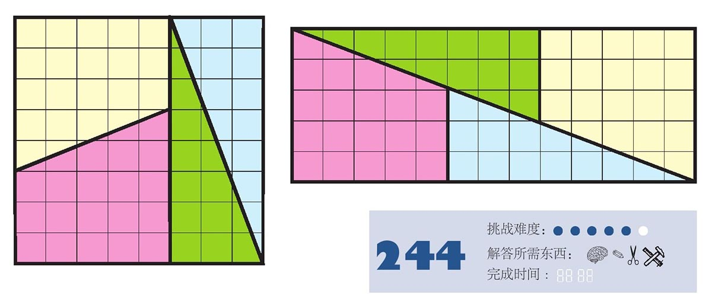
沿着单位正方形的网格将这个8×8的棋盘切割成四个部分——其中两个是不规则四边形，另外两个是三角形，如图所示。这四个部分可以组成一个5×13的长方形，包含65个平方单位的面积（这要比之前的棋盘多出1个平方单位）。对于多出来的1平方单位，你又会做出怎样的解释呢？
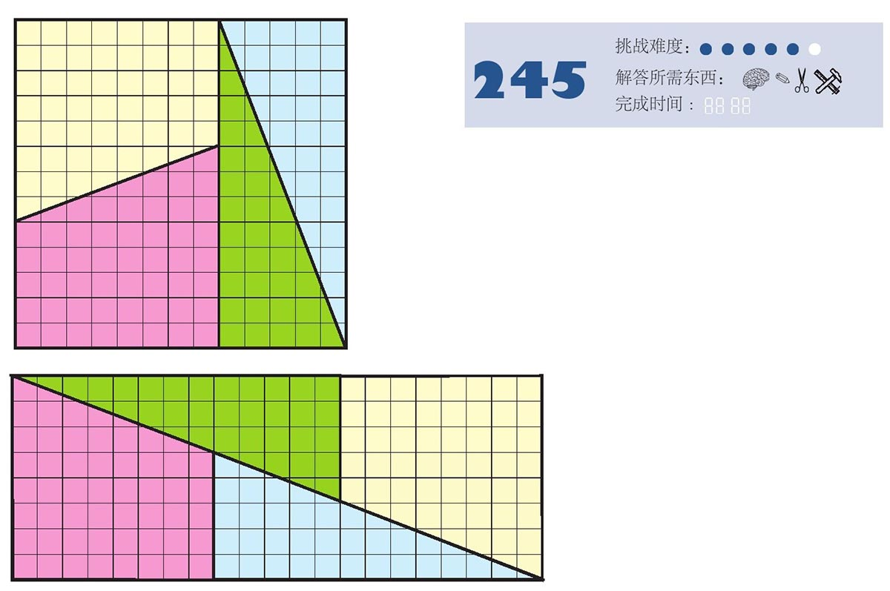
库里的正方形悖论
与此类似的，一个13×13的棋盘（面积为169个平方单位）被切割成四个部分，然后重新组成一个8×21的长方形（其总面积为168个平方单位）——比之前的正方形少1个平方单位。你怎样解释这少掉的1个平方单位呢？
有关剖分悖论的最早问题，通常被称为“几何消失”，这可以在威廉·胡珀1774年的著作《理性娱乐》（Rational Recreations）一书里找到。
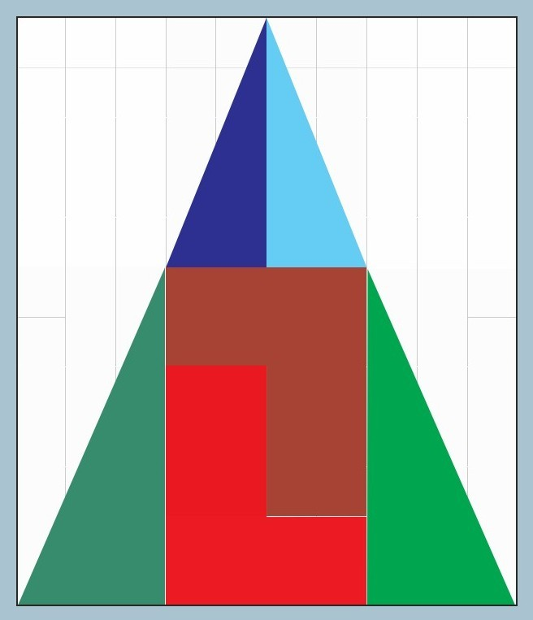
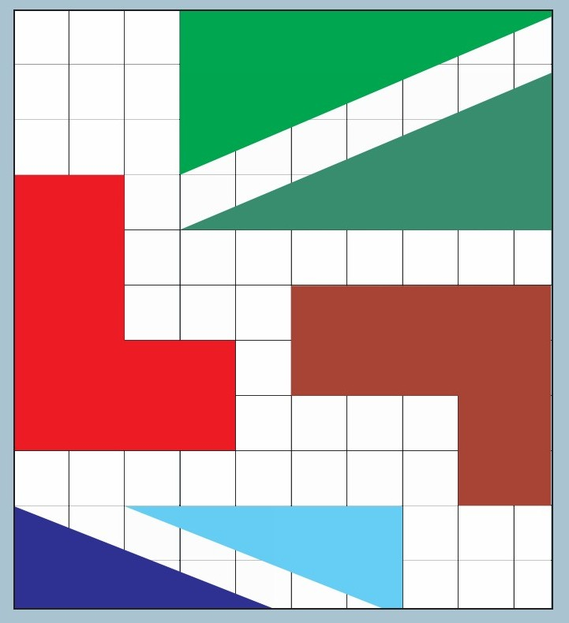
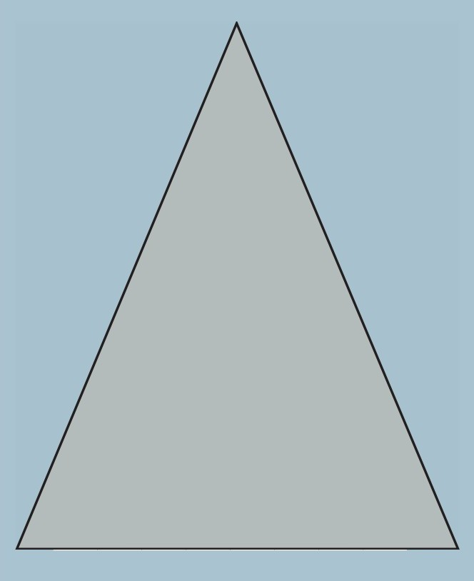
库里的三角形悖论——1953年
库里三角形，有时又被称为消失的正方形，这是美国神经精神病学家L.沃斯伯勒·利翁提出来的一个剖分缺陷问题，能够对来自纽约的魔术师保罗·库里在1953年发现的现象进行例证。组装之后的三角形面积是60平方单位，六个部分加起来的面积同样是60平方单位。
将这六个部分复制下来，将它们重新拼到三角形的灰色轮廓内，这个图形的面积同样是60平方单位。但这一次，图形的中间出现了一个洞。这是怎么做到的呢？你怎么可能将某个东西变没呢？因为库里是一位魔术师，你可能会认为其中会有一些魔术戏法。其实根本就不需要任何魔术手法，请看下面的图形。
显然，这个图形展现了一个面积为60平方单位的三角形、一个包含着洞的面积为58平方单位的三角形，以及一个面积为59平方单位的破碎长方形，它们都是用同样的六个部分拼成的。
对此现象的解释是，初始的细分行为其实并不精细，较大的三角形与较小的三角形组合起来的图形都是弯曲的，从而造成了这样的悖论。
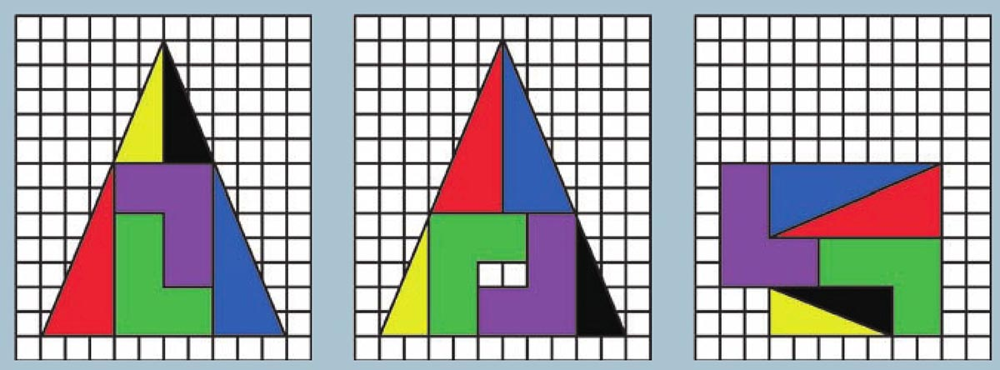
被拴住的狗
斐多是被拴在直径为2米的一棵大树上的一条狗，拴它的绳子长度是20米，它的跑动范围能够覆盖一个半径为21米的圆，但是它却被建在这个圆形范围内的一间小屋所阻挡，这大大减少了斐多活动的面积。
相比于它之前所能活动的较大的圆形面积，你能计算出它现在的活动范围吗？它是否能够到达如图所示的骨头位置？
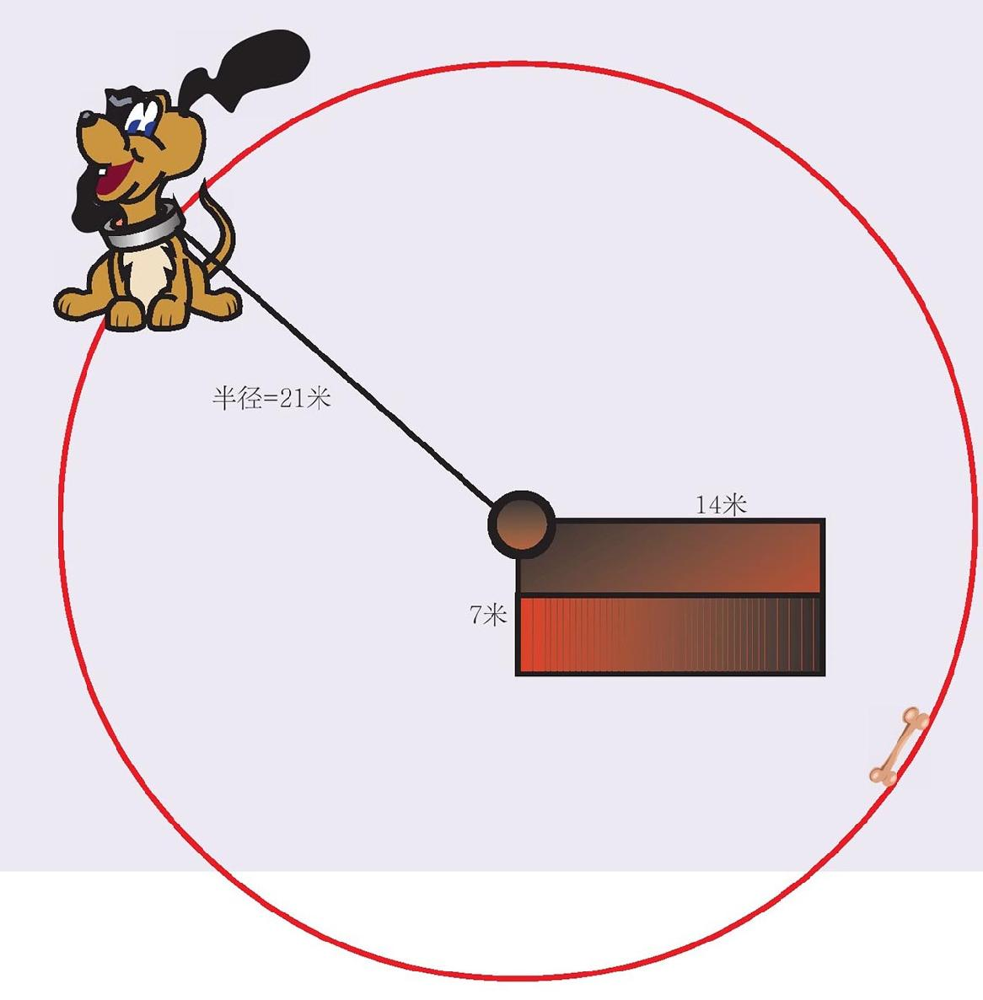
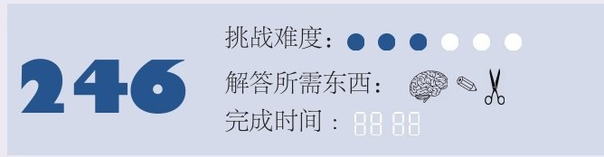
正八角形
你确定这个红色八边形的面积就是正八边形的面积吗？
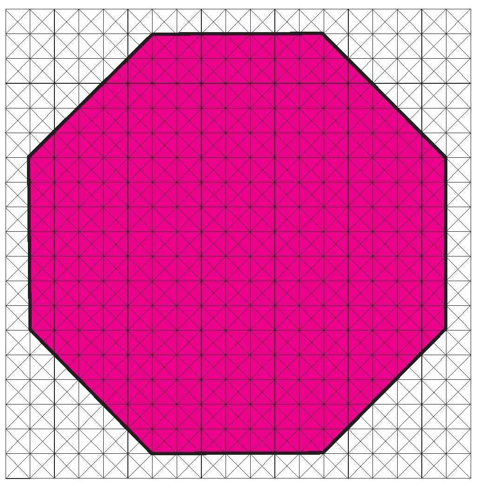
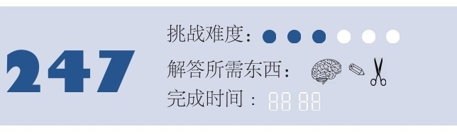
皮亚特·海恩传达的信息
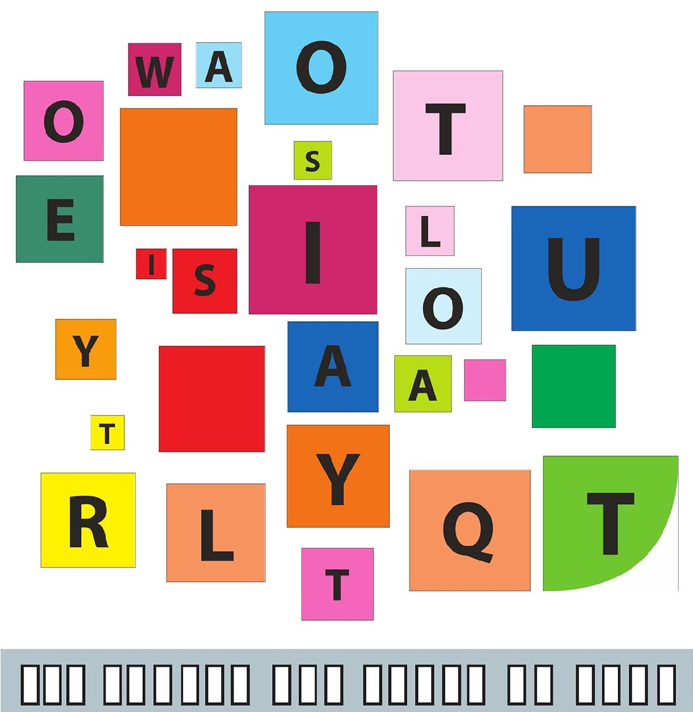
如图所示，你能破解这条有用的信息吗？
火星殖民地——1959年
1959年，格哈德·林格尔提出了一个有趣的地图着色问题。假设地球上某些国家已经在火星上开拓了自己的殖民地，这些国家中每一个国家只能在每个星球上拥有一块区域（本国及其殖民地）。
这些国家会很自然地认为，绘制火星地图时，它们在火星上的殖民地应该使用与它们在地球上一样的颜色。对两个球体上的11个区域进行着色，使两个有着相同数字的区域都涂上相同的颜色。当然，任意两个相邻的区域都不能使用相同的颜色。两个星球上的一个区域已经涂上颜色了，你最少还需要多少种颜色呢？
格哈德·林格尔（1919—2008）
格哈德·林格尔是德国数学家，曾在柏林的自由大学任教，他是图论研究的先驱者。他为希伍德猜想提供了证据，做出了巨大的贡献（现在这个猜想被称为林格尔-杨格定理）。这个问题与四色定理存在着紧密的联系。之后，他受邀到加州大学执教。
最小生成树问题——1956年
在图论里，一个生成树就是一个没有回路（闭环）的图的子集，它包含所有的顶点，但通常不包含所有的边。如果这些边是加权的，那么问题就是要找寻权重最小的生成树。
克鲁斯卡尔的运算方法解决了这个问题。步骤是按由小到大的顺序列出加权值，然后按照顺序进行选择，避开那些能够形成一个圆环的情况。
如图所示，你能为这个拥有10个顶点与21条加权边的图形找到最小生成树吗？
利用克鲁斯卡尔的运算方法，我们给出了下面这种解法。
棋盘方格——1956年
沿着棋盘的网格，你能找到多少个面积不等的正方形呢？你可能会随口说有64个。但是，在这个方阵里，不止有64个一平方单位的正方形。你能弄清面积不同的正方形总数有多少吗？你能总结出一种方法，在一边有n个单位正方形的正方形网格里，计算出面积不等的正方形总共有多少个吗？
棋盘立方体
在一个三维的立方体棋盘里，有多少个由单位立方体组成的不同大小的立方体呢？
正方形网格数字
如果我们将棋盘方格问题延伸开来，使之包括各种大小不同的长方形，那么我们就能得到一个正方形网格里的网格数目。
谜题一：从n=2到n=8，你能计算出正方形网格的数量L（n）吗？
谜题二：在一个8×8的正方形网格棋盘里，有多少个大小不同的正方形与长方形呢？
阁楼里的灯
谜题一：有一座古老的城堡，城堡上的窗户都用黑色的窗帘布遮住，阁楼上只有一盏灯。大门上有三个电灯开关，其中一个开关能够打开阁楼里的电灯。你的任务就是从三个开关中找到这个开关，让这盏灯亮起来。但是，你只能到阁楼上走一趟，检查电灯是否亮了。你怎样才能知道真正让电灯亮起来的是哪个开关呢？
谜题二：在之前提到的谜题里，有两个开关是没有用处的。现在，我们阁楼里有三个开关与三盏灯，每一盏灯都只对应其中的一个开关。如之前的规则，你只能进入城堡一次以检查电灯的情况。你怎样才能知道哪一个开关控制哪一盏灯呢？
老朋友见面
两位俄国数学家在一架飞机上相遇。伊凡说：“如果我记得没错的话，你有三个儿子，他们现在的年龄是多少啊？”
“他们三人的年龄相乘是36，”伊戈尔回答说，“他们的年龄相加之和刚好是今天的日期13号。”
“我很抱歉，伊戈尔，”伊凡等了一会儿说，“但是，你根本就没有告诉我你孩子的年龄啊！”
“哦，我忘记告诉你了，我最小的儿子有红色的头发。”
“啊，现在我知道了。”伊凡回答说，“我知道你三个儿子的确切年龄了。”
伊凡是怎么计算出伊戈尔三个儿子的确切年龄的呢？
蚂蚁的移动——1958年
纽约大学计算机科学教授丹尼斯·E.沙沙认为，如果没有符号x与y，那么符号x与y这两个符号就会以相同的距离，以两对或两对以上的方式出现其中，x总是走在y前面。他将这一系列符号定义为“令人惊讶的”。比方说，队列3是不会让人感到惊讶的，因为符号x与y两个一起出现而不是x先于y出现。在我们的游戏中，这些符号就是搬着不同颜色鸡蛋的蚂蚁。你能计算出六个蚂蚁队列当中，哪一队是让人感到惊讶的，哪一队则不是吗？
兰福德问题——1958年
兰福德问题是1958年苏格兰数学家C.达德利·兰福德在观看他的小儿子玩彩色积木之后提出的：这个小男孩将三对积木排成一列，让两块红色积木之间有一块积木，两块蓝色积木之间有两块积木，两块黄色积木之间有三块积木。他还成功地在两块绿色积木中间放入了四块积木，在多次调整之后，依然能够保持上面的属性。
在组合学里，兰福德配对，又称为兰福德序列，是成对的相同数字的排列如1，1，2，2，……，n, n序列的一种排列，其中两个1之间隔一个单位，两个2之间隔两个单位。数字k之间隔k个单位。兰福德问题就是要寻找已知值的兰福德配对。
赛跑选手谜题
谜题一：我们有四个赛跑团队，每个团队有两名赛跑运动员，如右边的图形所示。在终点线上，他们所处位置形成的图形结构发生了变化：一位运动员在两位穿红色运动衫的运动员之间，两位赛跑者在两位穿蓝色运动衫的运动员之间，三位赛跑者在两位穿绿色运动衫的运动员之间，四位赛跑者在两位穿黄色运动衫的运动员之间。我们可以肯定的是，一位穿黄色运动衫的运动员是最后一个冲过终点的。你能计算出前三名运动员所穿运动衫的颜色吗？
谜题二：我们有九个赛跑团队，每个团队有三名赛跑运动员。每一个团队都用数字1到9的连续数字来编号，并且以九种颜色区别开来。在终点线上，他们所处位置形成的图形结构发生了变化：三人组中每一个处于中间位置的选手都被他左右两边的同组队友所抛离。你能计算出在终点线时运动员所组成的图形结构吗？
混在一起的帽子——1959年
许多谜题都涉及巧合。其中最著名的一个问题应该是混在一起的帽子或混在一起的信件问题。有时，这又被称为“蒙特福特问题”。
假设有n个人参加一个派对，负责衣帽存放的女生专门登记并保管客人的帽子，然后将他们的帽子混在一起。混在一起之后，在所有参加派对的客人当中，至少有一人正确拿到自己帽子的概率是多少呢？你认为他们中任意一人找到自己帽子的概率是否能超过50%呢？
一个让人震惊的结论是，随着n的数值不断增大，任意一个特定的人找到自己帽子的概率会变得越来越小。但从另一方面去看，至少有一个人找到自己帽子的概率却越来越大。这两种效应会相互抵消。至少有一个人找到自己帽子的概率大约是63%。
你可以用一副纸牌去验证这个事实。洗牌，一次只翻看一张纸牌，嘴里同时念出所猜的牌面，例如数出：“A，2，3，4，……，10，J, Q，K, A，2，3，……”你念出来的牌面与实际牌面至少有一张相同的概率是多少呢？事实上，这是一个与混在一起的帽子类似的问题。你至少能够碰对一次的概率是相当高的。不信的话，你不妨试一试。
混在一起的帽子（一）
三个人登记存放他们的帽子。衣帽存放处的女生在将帽子递给客人之前，不小心将所有的帽子都混在一起了。之后，这三个人过来要他们的帽子。你认为三个人都能拿到自己的帽子的概率是多少呢？
混在一起的帽子（二）
六个人像以往那样去拿回他们的帽子，那么至少有一个人拿回自己的帽子的概率是多少呢？
早期的电脑艺术
第一次电脑绘图展览是在1965年举办的，之后陆续出现了多次这样的展览。最著名的一次展览要数1968年伦敦举办的神经机械意外发现艺术展。这次展览的目录也已成书，并出版发行，直到现在依然是有关全新艺术形式的一个最综合全面的展示。我们现在处在一个信息科技时代，人类的劳动正逐渐被电脑所取代，当然这并不是纯粹出于功利主义。最早的电脑绘图一般都是那些数学曲线与图形，是从人类历史初期就已经开始探寻的艺术形式。
使科学变为艺术的机器——1951年
法国物理学家朱尔·安托万·利萨如（1822—1880）发现了以他名字命名的利萨如图形。他利用不同频率的声音去振动连接着音叉的多面镜子，一束光从镜子里反射出来，形成了一张基于声音频率的美丽模型。今天，在激光放映中使用的就是一种相似的装置。
维多利亚时代经典的谐波记录仪玩具所描绘出来的利萨如图形，通常都是两个大摆钟彼此呈直角方式摆动着，其中一个摆钟上携带着一支笔，而另一个摆钟则携带着一些纸。由于摆钟受到摩擦阻力，利萨如曲线最后会停在一点上。早期的许多谐波记录仪都申请了专利。其设计方式限制了图画的大小以及质量，因此根本就没有任何艺术上的美感可言，但却是早期非常受欢迎的科学玩具。
在20世纪50年代末，我申请了一个冠以“谐波记录仪”之名的专利，这是一个基于全新设计理念的产品，能够创造出巨幅的具有美感的图画。这就是所谓的“莫斯科维奇谐波记录仪”，后来在世界各国获得了专利权。这个产品在1968年伦敦举办的神经机械意外发现艺术展上激发了许多人的极大兴趣。
因为我的这个发明在伦敦的那次艺术展上收获了诸多好评，并且在20世纪七八十年代的日内瓦发明大会上获得了金奖，因而受邀参加了许多艺术展览以及多个世界巡回展览（包括位于柏林的国际设计中心、墨西哥城的现代艺术博物馆、巴塞尔与汉诺威的迪达科塔展览馆以及耶路撒冷的以色列博物馆）。
1980年，英国一家名为彼得潘的玩具公司发布了一个以谐波记录仪为模型的游戏，这款游戏在20世纪80年代取得了巨大的成功。今天，莫斯科维奇版本的谐波记录仪依然是瑞士温特图尔科学中心馆里主要的交互式展品。我的女儿茜拉现在研发出了一个独特的谐波记录仪，受到了全世界艺术爱好者与收藏者的广泛好评。
利萨如的视觉装置
利萨如的装置投影通过振动音叉，让镜子对一束光进行反射，从而了解曲线移动情况以及模式。
维多利亚时代的谐波记录仪
维多利亚时代以来，这就是谐波记录仪的基本设计，直到莫斯科维奇在1951年做了改进。
莫斯科维奇谐波记录仪
世界上第一台申请专利的谐波记录仪的原型是在1951年发明的，这个记录仪上有一个可以旋转的面板。
谐波记录仪
1968年在伦敦举办的神经机械意外发现艺术展上展出的莫斯科维奇谐波记录仪所绘出的图形。
奥贝恩的多等腰直角形——1959年
多等腰直角形类似于多联骨牌，它们都是由n个等腰直角三角形（半正方形）沿着相同长度的边连接而成的。如果它们有着相同的边界，那么它们就是全等的。三角形的内部结构并不会让它们有什么不同。
只有一种单等腰直角形，三种双等腰直角三角形和四种三等腰直角三角形。
奥贝恩的四等腰直角形
如图所示，你可以看到14个四等腰直角形。由n个三角形组成的多等腰直角形的数量形成下面的数列：1，3，4，14，30，107，318，1106，……。
奥贝恩的六钻形问题——1959年
1959年，托马斯·奥贝恩注意到，多联骨牌可以通过6个等边三角形连接而成，5个等边三角形会形成对称的多联骨牌，而7个等边三角形则无法形成。如果我们将非对称的六钻形的镜像计算在内，就可以得到19种形状，这与一个正六边形覆盖的3×3的棋盘面积是一样的。奥贝恩提出了下面这个问题：这19种形状能否覆盖由19个正六边形组成的棋盘呢？
奥贝恩的六钻形问题是二维空间谜题中最具挑战性的一个问题。
奥贝恩的解答方法
奥贝恩耗费了数月才找到解答的方法。他的第一个解法如图所示。
理查德·K.盖伊对这些解答方法进行了分类。根据他的估算，大约有50000种不同的解答方法，而他所收录的解答方法已经超过4200种。你能找到一个不同的解答方法吗？
由五联骨牌组成的十二面体
正十二面体是一个拥有12个正五边形面的三维立方体。英国数学家约翰・霍尔顿・康威想知道的是，是否有可能对十二面体的每条边进行着色，从而让12个五联骨牌的每个都显示在十二面体的面上？
你能找到将12个五联骨牌放到一个十二面体上的方法吗？你可以通过建构一个三维立方体或通过绘制十二面体的施莱格尔图表，在平面上做出一个与三维立体等价的拓扑图形，更方便地解答这个问题。
在扭曲的图表里，请注意，每一个背面被拉伸后变成了图表的外缘。
帽子与囚犯
与帽子问题这一经典问题相关的最新版本，其实就是从原先版本中衍生出来的一个逻辑性问题：在第一次世界大战期间，有100名被俘的士兵被关在战俘营。战俘营的守卫士兵想要休假，他们就想枪决掉所有俘虏。但是，战俘营的指挥官稍微公平一点，尽管他同意这样做，他还是决定先告诉所有战俘他们将被射杀，除非他们能回答一个问题。
于是，所有的战俘都被集中起来。这位指挥官大声地说：“你们这些肮脏的狗，我应该将你们全部枪毙掉。但是，作为一名公正的猎人，我要给你们最后一个机会。你们将会被带到食堂，喝下桌子上最后一杯酒。而我则要准备一个装着相同数量红色与黑色帽子的板条箱，将之放在食堂的前面。你们需要逐一离开。然后，我们会随机从板条箱里抽出一顶帽子戴到你们的头上。你们不能看到自己头顶上帽子的颜色，但是能够看到其他人帽子的颜色。你们要排成一列，如果你们说话或以任何方式与别人交流，就将被立即枪决。之后，我将会从你们中某个位置开始，询问你们每个人所戴帽子的颜色。如果回答正确的话，就会被释放；如果回答错误的话，就会被枪决。”
这些被俘的士兵被带到了一个大厅，他们开始讨论所面临的局势，想出了某种应对这种情形的策略。之后，每名被俘的士兵都被戴上了一顶帽子。战俘营指挥官原本预想着至少要枪决50%的战俘，于是就开始询问每名战俘头顶上帽子的颜色。
你认为这名战俘营指挥官必须释放多少名被俘的士兵呢？
最短路问题
如图所示，这是一个有七个点（包含顶点、结点）的加权图。我们的目标就是找到所谓的最短路径，就是要找寻顶点A与顶点G之间的一条路径，让相互连接的边的加权值是最小的。
在这幅简单的图中，你可以通过试错找到答案16。但是，在更复杂的图里，你必须要给出数学证明才能确定你的答案正确，就如下面将要提到的代克斯托演算法。
代克斯托演算法
如图所示，你能运用代克斯托演算法，找出A点与G点间的最短路径吗？
代克斯托演算法需要你为每个点分配以下3个标签：序号、固定值、运算值。分配方式如下：
1.对起点来说，固定值为0，序号为1。
2.直接与给定的最终顶点相连接的顶点，其固定值等于其运算值，而运算值等于上一个固定值加上连线的权重。如果该点已经有一个运算值，比较一下数值的大小，用更小的那个值替换原有的。
3.在网络里选择运算值最小的那个结点，使它成为那个点的固定值。
4.如果终点拿到了固定值，就可以直接进入第五步，否则重复第二步。
5.将终点与起点连起来，然后逆着顺序往回走。选择路径的标准是，结点的固定值之差刚好等于连线的权重。这条路就是最短路径。
连续正方形包装问题——1960年
连续正方形包装问题可以说是消遣数学领域内一颗迷人的明珠。它涉及边长1到一个特定值的连续的正方形。这些连续的较小正方形能否在不重叠的状态下完整地覆盖一个较大的正方形呢？
让我们做个实验：边长为1与2的正方形无法形成一个正方形，我们能做到的，就是将这两个正方形装入一个边长为3的正方形。与此类似的，边长为1，2，3的正方形也不能在填充到其他正方形时不留下空隙，边长为1，2，3，4的正方形也是如此。
要解答这个问题，首先要将连续正方形的面积相加，直到最后的结果是一个平方数。
但是，12+22=5
12+22+32=14
12+22+32+42=30
上面这些都不是完全平方数。
如果我们继续计算这些数字系列，并且进行的次数比较多，最终就能发现12+22+32+42+……+242=4900=702。这就是一个完全平方数。事实上，让人惊讶的是，这不仅是第一种，而且是唯一一种将连续的平方数相加，并且得到一个总的平方数的方法。（这样的演示在数论中是比较困难的，因此这在相当长的一段时间内都是一个悬而未决的问题）。
假设已知前面连续24个正方形的面积等于一个70×70的正方形，下面是一个具有美感的几何谜题：能否将从1个平方开始的连续24个正方形包装起来，放入一个70×70的正方形中？面积的相等是一个必要条件——但是，这样的条件也许并不充分。事实上，我们还没有找到一个完整的包装方法，不过，没找到并不证明就没有。因此，这个问题就可以重新进行阐述。前24个正方形里有多少个能被装入70×70的正方形呢？
到目前为止，这个问题最好的已知答案就是“除了一个以外的所有正方形”。在我们已知的所有例子里，只有7×7的正方形是需要排除在外的，如图所示，你还能做到更好吗？
连续多面方形螺线——1960年
三角形数能够形成平方数吗？显然，第一个三角形数1是一个平方数，第八个三角形数36，如图所示，也是一个平方数。下一个平方数是什么呢？我们可以看到，从中间位置的单方块开始连续添加多联骨牌，就形成了如图所示的逆时针方形螺线。
最初的八个连续多联骨牌能够形成一个多联骨牌螺线，从而镶嵌一个6×6的立方体，如图所示。
遵照上面所提的这些原则，我们可以提出下面这些有趣的问题：
1.你能够对组成6×6的正方形的方块进行重组，使之变成另一种不同的正方形模式吗？
2.继续之前的螺线构成方式，进一步选择连续多联骨牌，那么下一个长方形会出现在什么阶段呢？面积多大呢？
3.接下来会在什么阶段出现下一个正方形呢？这个正方形的面积又会是多少呢？
黑暗里找袜子
我在一个抽屉里放了六只红色的袜子、六只黄色的袜子以及六只绿色的袜子。在伸手不见五指的情况下，要想找到一对任意颜色的袜子，我至少需要抽出多少只袜子呢？要想找到每种颜色的一对袜子，我至少需要抽出多少只袜子呢？
黑暗里找手套
我在抽屉里放了两双黄色的手套、三双红色的手套、四双绿色的手套、五双蓝色的手套。在伸手不见五指的情况下，要想找到一双颜色完全相同的手套，我需要抽出多少只手套呢？
找不到的袜子与墨菲定律
想象一下，在你洗了五双袜子之后，发现有两只不见了。下面哪种情形最有可能发生呢？
1.两只丢失的袜子是一双完整的袜子，那么你只剩下四双完整的袜子了。
2.你只剩下三双完整的袜子，以及两只不配对的袜子。
爱德华·A.墨菲曾说：“任何差错都会出现，并且是在最糟糕的时候出现。”墨菲定律是否适用于抽屉里找袜子的情况呢？